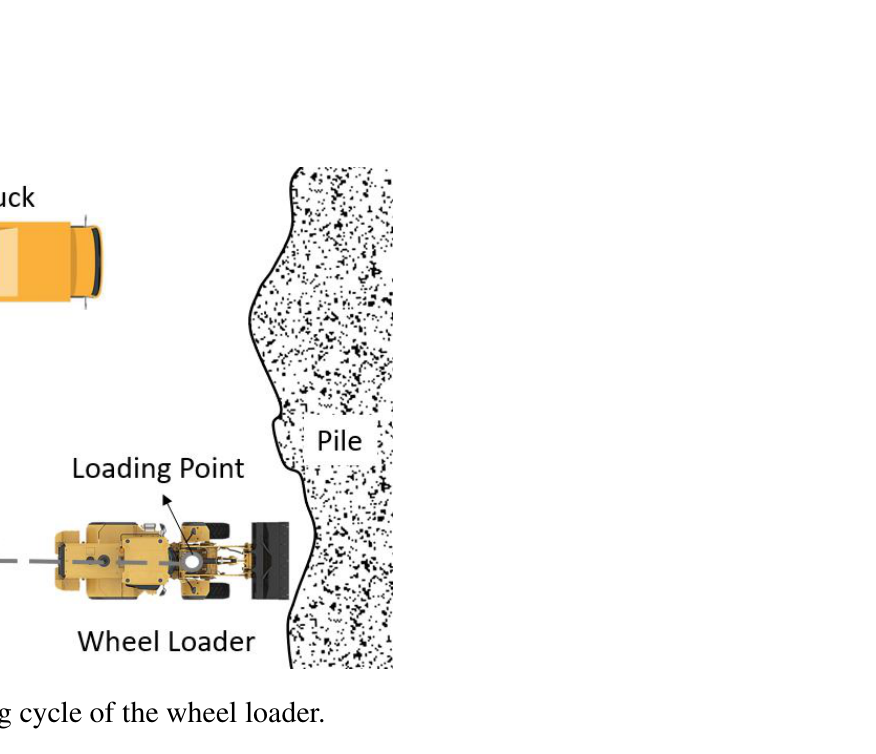
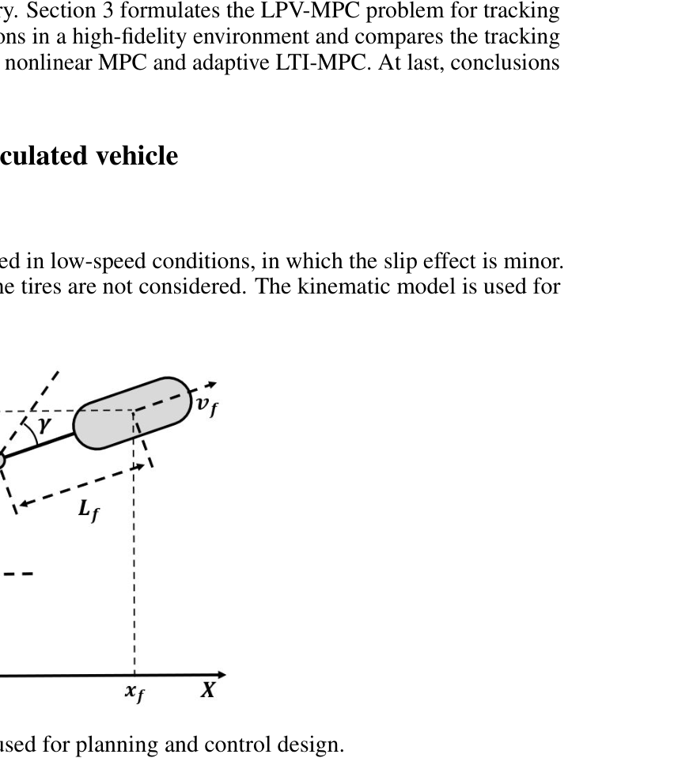
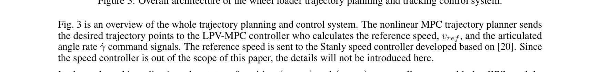
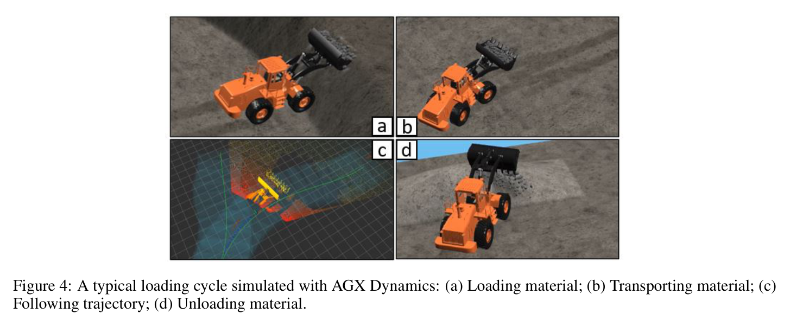
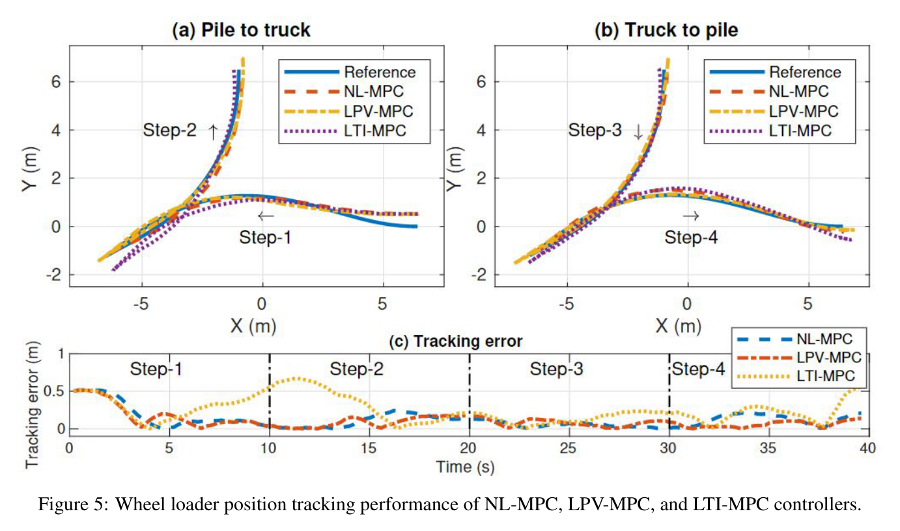
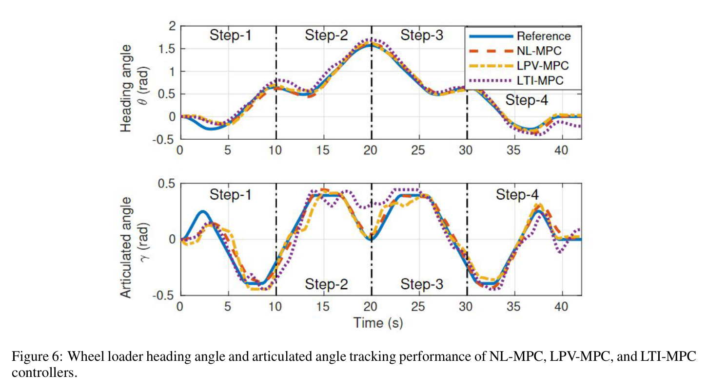
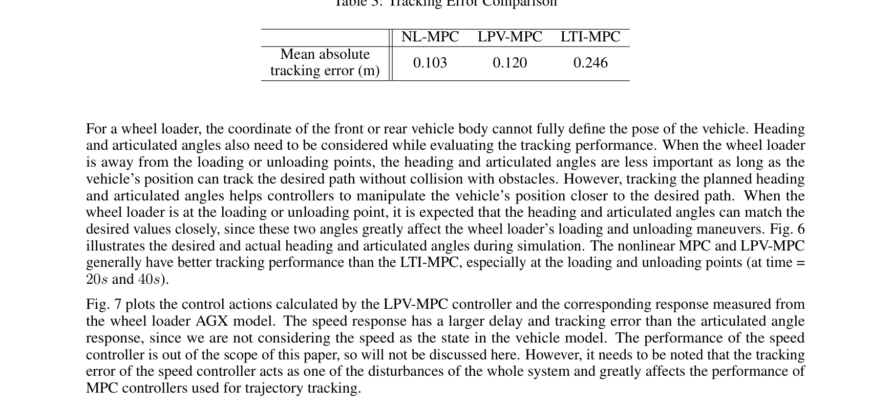

Autonomous Wheel Loader Trajectory Tracking Control Using LPV-MPC
Ruitao Song, Zhixian Ye, Liyang Wang, Tianyi He, Liangjun Zhang
한줄 요약 — 저속 휠로더의 무슬립 기구학과 굴절각·장애물 제약으로 NL-MPC 기준 궤적을 먼저 만들고, 전진 때 전차체·후진 때 후차체 좌표를 선택하는 LPV-MPC로 5Hz 추종해, 비선형 MPC에 가까운 0.120m 평균 오차와 선형 QP 수준의 온라인 계산 효율을 함께 얻은 계획·제어 프레임워크다.
1.연구 배경 및 동기
굴절조향 비선형성과 실시간 계산량 사이의 절충
휠로더는 pile과 dump truck 사이를 전진·후진하며 Y자 loading cycle을 반복한다. 전·후 차체가 힌지와 유압 조향장치로 연결돼 회전반경은 작지만 운동은 강한 비선형을 띤다. 적재·하역 지점에서는 위치뿐 아니라 heading과 articulated angle이 접근 자세를 결정하므로 중심선만 따라가는 제어로는 부족하다.
비선형 MPC는 기구학과 제약을 예측구간 전체에 반영하지만 매 주기 비선형 프로그램을 풀기 무겁다. 반대로 현재 운전점의 선형화를 고정하는 adaptive LTI-MPC는 빠르지만 heading과 굴절각이 변할 때 예측이 부정확하다. 저자들은 무거운 NL-MPC는 오프라인 계획에, nominal trajectory의 Jacobian 열을 쓰는 LPV-MPC는 온라인 추종에 배치한다.

원문 Figure 1 · PDF p.2 — Figure 1: A typical loading cycle of the wheel loader.

원문 Figure 2 · PDF p.3 — Figure 2: The wheel loader model used for planning and control design.
선행 연구의 한계
Reeds-Shepp·A*·RRT 계열 계획은 전체 기구학과 굴절각을 충분히 반영하지 않아 추종이 어렵다.
현재점 선형화를 horizon에 고정한 MPC는 비선형 변화가 큰 구간에서 성능을 잃는다.
일부 제어 연구는 articulated angle을 평가하지 않아 적재·하역 자세 품질을 설명하지 못한다.
온라인 NL-MPC는 prediction horizon이 길어질수록 계산시간이 빠르게 증가한다.
이 연구의 기여
오프라인 NL-MPC 계획과 온라인 LPV-MPC 추종으로 전체 Y자 작업주기를 구성했다.
비선형 기구학을 nominal scheduling parameter에 담은 quasi-LPV 오차모델을 유도했다.
전진·후진 방향에 따라 전차체·후차체 좌표를 바꿔 반대 차체의 오차 누적을 줄였다.
AGX Dynamics에서 NL·LPV·adaptive LTI-MPC의 정확도와 계산량을 동일 조건으로 비교했다.
2.방법론 및 시스템 구성
계획기는 loading·unloading pose, pile·truck 사각 장애물, 상태·입력·굴절각·안전거리 제약을 받아 두 Y자 구간을 만든다. 첫 구간은 pile에서 후진한 뒤 truck으로 전진하고, 두 번째는 truck에서 후진해 pile로 복귀한다. 비용은 제어입력과 입력 변화량을 줄이며, 이동 장애물을 가정하지 않아 작업 전 오프라인으로 계산한다.
추종기는 nominal state-control point마다 비선형 모델을 1차 Taylor 전개하고 Jacobian의 비선형 항을 ρ로 묶는다. 예측구간의 A(ρ), B(ρ)가 계획 결과에 있으므로 tracking error와 control deviation의 QP를 receding horizon으로 푼다. 위치·heading·굴절각은 GPS·IMU·encoder로 측정하고, 속도와 굴절각속도 명령을 하위 제어기로 보낸다.
처리 파이프라인
1
저속 기구학 정의
slip angle과 횡력을 무시하고 상태를 [xr,yr,θ,γ] 또는 [xf,yf,θ,γ], 입력을 v와 γ̇로 둔다.
2
작업주기 분해
pile 후진, truck 접근·하역, truck 후진, pile 접근의 네 단계와 경계 pose를 정의한다.
3
오프라인 NL-MPC
제어량·변화량 비용과 비선형 기구학, 상태·입력·굴절각·장애물 안전거리 제약으로 기준 궤적을 계산한다.
4
Nominal Jacobian 열
계획된 (x*,u*) 각 점에서 A(x*,u*), B(x*,u*)를 구해 ρ에 의존하는 LPV 모델로 표현한다.
5
LPV-MPC QP
예측구간의 ρ 열을 읽어 상태오차·제어편차 비용과 δX·δU 제약을 풀고 첫 입력만 적용한다.
원문 Figure 3 · PDF p.6 — Figure 3: Overall architecture of the wheel loader trajectory planning and tracking control system.
3.핵심 기술
비선형 계획과 선형시변 추종의 역할 분리
계획 시점에는 안전거리·굴절각·경계 pose를 포함한 비선형 문제를 풀어 실행 가능한 nominal trajectory를 만든다. 실행 중에는 그 주변의 작은 오차만 LPV QP로 다룬다. 정적인 작업구역에서 큰 계산을 선행하고 제어주기에는 예측정확도를 보존하는 설계다.
계획 horizon N=100, Ts=0.2초, 최대 굴절각 0.40rad를 사용했다.
추종 horizon은 N=10이고 5Hz로 실행했다.
미래 ρ를 모르는 계획 전에는 LPV-MPC를 직접 쓰기 어렵다.
Scheduling parameter로 보존한 비선형성
adaptive LTI-MPC는 현재점 모델을 horizon에 고정하지만 LPV-MPC는 nominal sequence의 각 점에서 다른 Jacobian을 사용한다. heading과 articulated angle이 변해도 A(ρ), B(ρ)에 기구학 변화가 남는다. 실제 상태가 nominal 근방이라는 전제에서 NL-MPC보다 가볍고 LTI보다 정확한 예측을 얻는다.
tracking error xe=x-x*, control deviation ue=u-u*를 최적화한다.
LPV와 LTI는 매 step QP를 풀어 계산복잡도가 유사하다.
NL-MPC는 nonlinear programming 때문에 horizon 증가에 더 민감하다.
진행 방향에 맞춘 차체 좌표 선택
한 차체 위치만 비용에 넣으면 다른 차체 오차가 heading·굴절각을 통해 커질 수 있다. 전진 중에는 선두인 전차체, 후진 중에는 선두가 되는 후차체를 직접 추종하면 반대 차체가 자연스럽게 따라온다. loading·unloading·turning point에서 표현을 바꾸는 실용적 안정화 장치다.
전진은 (xf,yf), 후진은 (xr,yr)를 상태에 쓴다.
heading과 articulated angle은 두 표현 모두에 포함된다.
GPS·IMU·encoder로 필요한 상태를 직접 측정할 수 있다.

원문 Figure 3 · PDF p.6 — Fig. 3 is an overview of the whole trajectory planning and control system. The nonlinear MPC trajectory planner sends the desired trajectory points to the LPV-MPC controller who calculates the reference speed, vref, and the articulated angle rate ˙γ command signals. The reference speed is sent to the Stanly speed controller developed based on [20]. Since the speed controller is out of the scope of this paper, the details will not be introduced here.
4.실험 결과
실험 환경·장비·데이터
AGX Dynamics와 Matlab/Simulink를 연동한 고충실도 휠로더 simulation을 사용했다.
세 제어기에 같은 가중치와 기준을 쓰고 시작점에 0.5m lateral error를 넣었다.
위치·heading·굴절각 추종과 horizon별 평균 계산시간·분산을 비교했다.
비교 기준
비선형 모델을 매 주기 직접 푸는 NL-MPC
현재점 선형화를 horizon에 고정하는 adaptive LTI-MPC
nominal scheduling sequence를 쓰는 제안 LPV-MPC
평가 지표
전체 주기의 mean absolute position error
heading과 articulated angle의 시간 추종
horizon별 평균 solve time과 분산
속도·굴절각속도 명령과 AGX 응답

원문 Figure 4 · PDF p.7 — Figure 4: A typical loading cycle simulated with AGX Dynamics: (a) Loading material; (b) Transporting material; (c) Following trajectory; (d) Unloading material.
핵심 결과 해석
전체 loading cycle에서 NL-MPC와 LPV-MPC의 평균 절대 위치오차는 각각 0.103m와 0.120m였고 adaptive LTI-MPC는 0.246m였다. heading·articulated angle도 NL·LPV가 우세했으며 적재·하역 지점인 약 20초와 40초에서 차이가 중요했다. nominal 비선형 변화를 horizon별로 유지한 효과다.
계산시간은 horizon이 늘수록 NL-MPC가 빠르게 증가했지만 LPV는 LTI와 거의 같았다. LPV는 NL보다 오차가 0.017m 크지만 QP 수준으로 계산을 줄였고, LTI와 비슷한 계산량으로 오차를 0.126m 낮췄다. 속도가 상태에 없어 speed-loop 지연과 오차가 공통 외란으로 남았다.
정량 결과
평가 항목
정량 결과
조건·맥락
원문 근거
NL-MPC 평균 절대 위치오차
0.103 m
AGX 전체 loading cycle
PDF p.8
LPV-MPC 평균 절대 위치오차
0.120 m
제안 추종기, 동일 기준
PDF p.8
adaptive LTI-MPC 평균 절대 위치오차
0.246 m
동일 작업주기
PDF p.8
초기 횡오차
0.5 m
세 제어기의 안정화 비교
PDF p.7
온라인 제어주기
5 Hz
N=10, Ts=0.2 s
PDF p.6
실패 사례와 경계조건
LTI-MPC는 heading과 굴절각이 빠르게 변할 때 모델이 실제 운동과 벌어져 가장 큰 오차를 보였다.
속도 응답은 굴절각 응답보다 지연·오차가 컸고 이 하위루프 오차가 MPC 외란으로 작용했다.
LPV-MPC는 미래 ρ sequence가 필요해 nominal trajectory가 없는 계획 단계에 쓰기 어렵다.
지면 외란·모델 불확실성의 강건성은 분석하지 않았고 실차 시험도 없었다.

원문 Figure 5 · PDF p.8 — Figure 5: Wheel loader position tracking performance of NL-MPC, LPV-MPC, and LTI-MPC controllers.

원문 Figure 6 · PDF p.9 — Figure 6: Wheel loader heading angle and articulated angle tracking performance of NL-MPC, LPV-MPC, and LTI-MPC controllers.

원문 Figure 7 · PDF p.8 — Fig. 7 plots the control actions calculated by the LPV-MPC controller and the corresponding response measured from the wheel loader AGX model. The speed response has a larger delay and tracking error than the articulated angle response, since we are not considering the speed as the state in the vehicle model. The performance of the speed controller is out of the scope of this paper, so will not be discussed here. However, it needs to be noted that the tracking error of the speed controller acts as one of the disturbances of the whole system and greatly affects the performance of MPC controllers used for trajectory tracking.
이 연구는 굴착 장비의 계획과 실시간 제어를 계산 경계로 나누는 방법을 보여준다. 지도와 작업점이 비교적 정적일 때 비선형 제약을 충분히 반영한 궤적을 먼저 계산하고, 실행 중에는 계획에서 얻은 local model로 빠르게 오차를 줄이는 구조는 굴착기 팔 계획·추종에도 대응한다.
현장에서는 지반과 payload가 nominal sequence를 무효화할 수 있어 ρ의 온라인 갱신이 핵심이다. wheel slip·IMU·구동 토크·적재량을 추정하고 tube 또는 constraint tightening을 결합하면 계산 장점을 유지하면서 안전여유를 만들 수 있다.
전후진에서 선두 차체 좌표를 바꾸는 방식은 articulated vehicle 추종에 유용하다.
NL 계획·LPV 실행 분리는 edge computer의 계산 예산을 배분하는 실용적 패턴이다.
실차 적용에는 GPS·IMU·encoder 외에 slip·payload 추정이 필요하다.
평가에는 평균 오차뿐 아니라 각도·제약위반·최악 solve time·작업주기를 포함해야 한다.
7.전체 그림·표
본문 핵심 위치에 배치하지 않은 원문 Figure와 Table을 원문 페이지 순서로 수록한다.